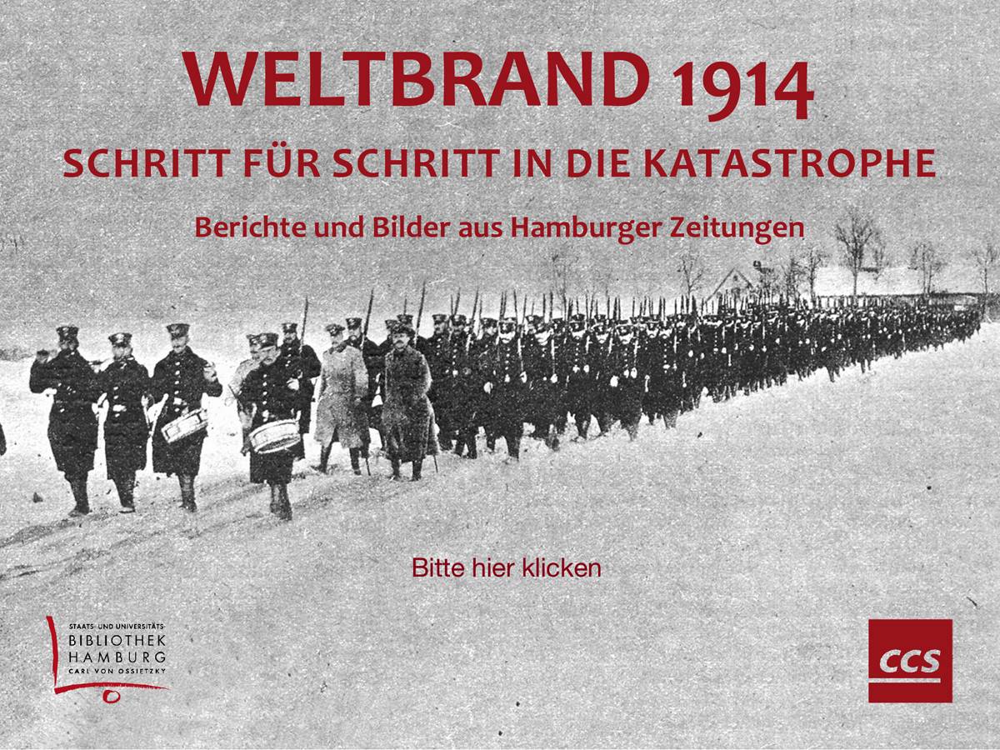
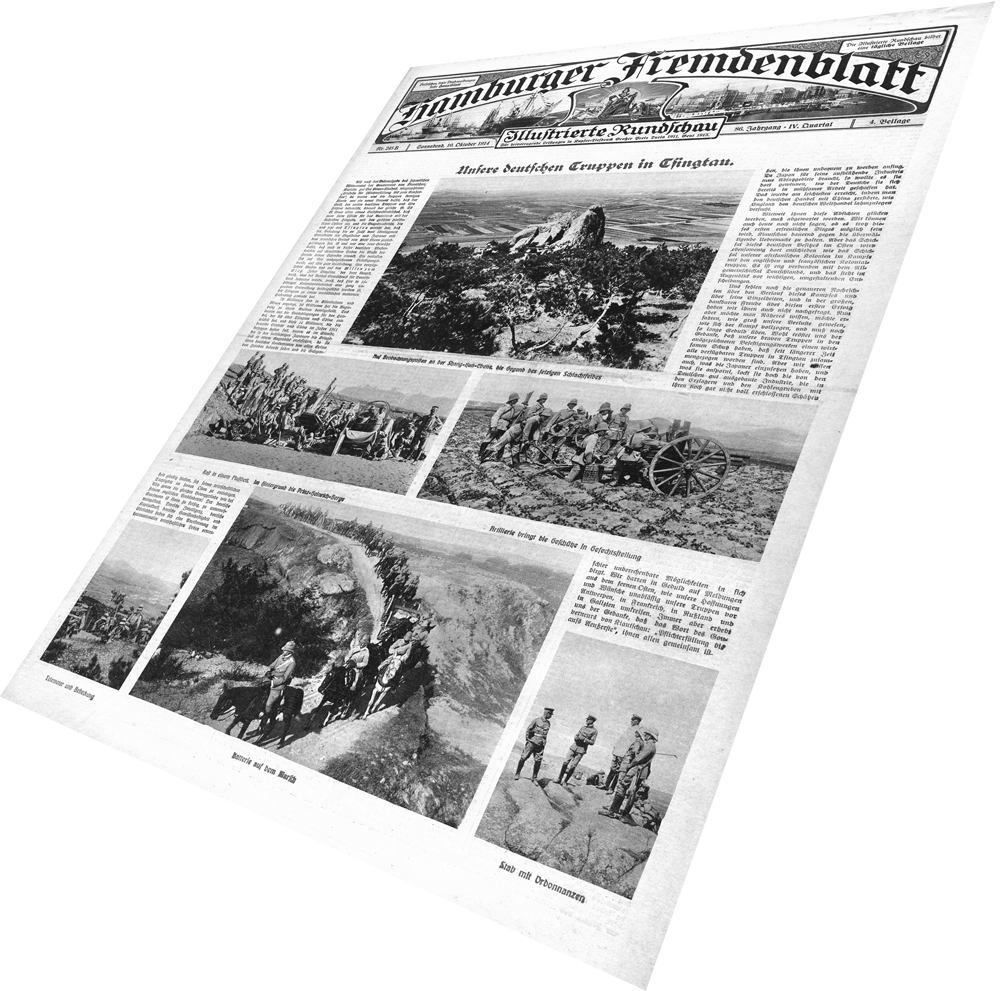
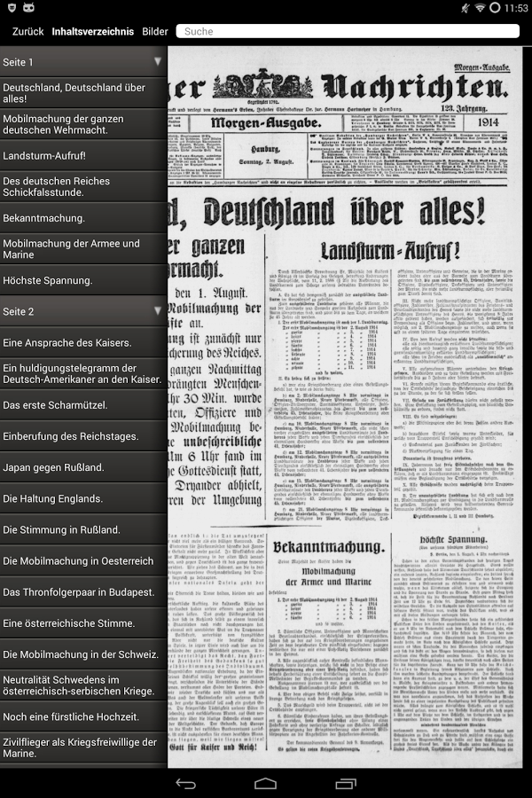

Markus TRAPP
Die App 'Weltbrand 1914 der SUB Hamburg - Ein Werkstattbericht
Zusammenfassung
Wie kommt eine wissenschaftliche Bibliothek dazu, eine App entwickeln zu lassen, auf der 100 Jahre alte Zeitungsseiten der Hamburger Nachrichten gelesen werden können, in denen auf Volltextebene recherchiert werden kann und die einen Einblick in Fotos gibt, die zu Beginn des Ersten Weltkrieges veröffentlicht wurden? Wie ist die Vorgeschichte der Tablet-App für iOS und Android, wie ist die SUB Hamburg an diese Aufgabe herangegangen und wie hat sie das Projekt zusammen mit dem Hamburger Softwareunternehmen CCS realisiert? Auf diese Fragen gibt der folgende Werkstattbericht eine Antwort und liefert auch ein erstes persönliches Zwischenfazit von einem der Projektbeteiligten.
Schlüsselwörter
Geschichte; Erster Weltkrieg; App; iOS; Android; Tablets
The App Weltbrand 1914 by SUB Hamburg - A Workshop Report
Abstract
How does an academic library come up with the idea of building an app that allows users to read 100 year old newspaper pages of the Hamburger Nachrichten, that offers full-text searching and provides photos that were published at the start of the Great War? What is the backstory of the tablet app for iOS and Android, how has the SUB Hamburg approached this task and how has it implemented the project together with the Hamburg-based software company CCS? The following workshop report gives answers to these questions and also provides a first personal interim conclusion by one of the project participants.
Keywords
history; great war; app; ios; android; tablets

Abb. 1: Startscreen der App 'Weltbrand 1914'
1 Vorgeschichte
Am Anfang war die Idee: Das Hamburger Softwareunternehmen CCS (Content Conversion Specialists GmbH), mit dem die SUB Hamburg bereits im Bereich Digitalisierung zusammen arbeitet, ist mit der Idee an die SUB herangetreten, gemeinsam eine App mit im Volltext recherchierbaren Zeitungsseiten der Hamburger Nachrichten zu entwickeln. CCS hat zuvor in einem vergleichbaren Projekt eine App mit Original New Yorker Zeitungsberichten aus dem Jahr 1912 zum Untergang der Titanic realisiert. Die Hamburger Nachrichten (erschienen von 1792-1939) sind im Bestand der SUB und wurden, neben anderen Hamburger Zeitungen, im Rahmen des EU-Projektes Europeana Newspapers (Laufzeit 2012-2015) komplett digitalisiert. In einem gemeinsam geschaffenen Rechercheportal können mittels eines im Web frei verfügbaren Zeitungsbrowsers 18 Mio. Zeitungsseiten in 20 Sprachen im Volltext abgefragt werden. An Europeana Newspapers arbeiten 18 Teilnehmer mit, davon 13 Bibliotheken als 'Content Provider' (u.a. die SUB Hamburg) und fünf Dienstleistungs- und Koordinationsinstitutionen (u.a. CCS).
Der Hintergrund dieses Projektes in Stichworten, Näheres findet sich unter http://europeana-newspapers.eu (Zugriff am 15.12.2014): Die Erschließung digitalisierter historischer Zeitungen ermöglicht die Volltextrecherche innerhalb der gemeinsam geschaffenen 'Knowledge Base'. Zu beachtende Punkte waren: Normierung, Unterstützung der Zeitungsdigitalisierung mit verschiedenen Tools, die Definition von Metadaten-Standards mit dem Ziel, nicht nur OCR (Optical Character Recognition), sondern auch OLR (Optical Layout Recognition) zu realisieren. Letzteres bedeutet, dass bei Recherchen nicht nur die Zeitungsaugaben benannt und verlinkt werden, die einen Treffer für die jeweilige Suche liefern, sondern dass auf den konkreten Artikel verlinkt wird und die Suchtreffer im Text farblich markiert werden. Dieses wichtige Feature aus Europeana Newspapers sollte die geplante App natürlich auch bieten (was sie auch tat, dazu später mehr).
Finanziert wurde das App-Projekt von den beiden beteiligten Partnern (SUB Hamburg und CCS). Die App selbst sollte für die Nutzer kostenlos angeboten werden. Sie wurde zunächst für das iPad (iOS) und dann auch für Android-Tablets entwickelt. Die SUB sieht in dem Projekt einen Test, ob es für Bibliotheken Sinn macht, den Nutzern ihre digitalisierten Bestände mittels einer App zu präsentieren. Die App wurde bewusst nur für Tablets konzipiert, weil das ganzseitige Anzeigen von Zeitungsseiten auf Smartphones keinen Sinn macht und die Recherchen auf den kleinen Displays wenig zielführend und mühsam wären.
Auch wenn die App sich an alle richtet, die in historischen Zeitungen recherchieren wollen, ist ein weiteres Anwendungsszenarium auch der Einsatz der App als Lehrmittel für Unterrichtseinheiten zum Ersten Weltkrieg in Schulen, Hochschulen und der Erwachsenenbildung. In diesem Kontext ist das Thema Nachhaltigkeit als anvisiertes Ziel für die App zu nennen. Es geht der Bibliothek auch darum, Materialien zur Verfügung zu stellen, die über das Gedenkjahr hinaus eingesetzt werden können.
2 Entwicklung und Konzeption der App
Nachdem Ende 2013 klar war, dass die SUB Hamburg die App zusammen mit der Firma CCS umsetzen wird, wurde ein ambitionierter Zeitplan aufgestellt, mit dem Ziel die Anwendung nach nur fünf Monaten, bis spätestens Ende April 2014, zu veröffentlichen. Es sollten sich thematisch um die mediale Spiegelung des Beginns des Ersten Weltkriegs handeln und eine Auswahl an insgesamt 930 Zeitungsseiten ab Ende Juni 1914 (Attentat von Sarajevo) bis zum Ende des Jahres 1914 zur Recherche angeboten werden. Wenn das Thema 100 Jahre Beginn des Ersten Weltkrieges mediales Echo erfahren würde, sollte auch die App fertig sein. Um es vorweg zu nehmen: der Zeitplan konnte eingehalten werden. Am 24. April 2014 stand die App zum kostenlosen Download im App-Store von Apple bereit.
Zurück zur Konzeption der App: Die Hamburger Nachrichten, eine überregionale Tageszeitung mit weltweitem Korrespondentennetz war ein sehr textlastiges Blatt. Um die fehlenden Fotografien auszugleichen, wurde die App auch mit einer Auswahl an Fotos aus dem Hamburger Fremdenblatt erweitert. Aus deren Fotobeilagen der Monate August - Dezember 1914 wurden 100 Fotos ausgewählt, die es in hoher Auflösung in monatlichen Galerien mit kurzen Bildbeschreibungen und mit der auf Touchscreens üblichen Zweifingertechnik zoombar in der App zu betrachten gibt.

Abb. 2: 'Hamburger Fremdenblatt', deren Fotos aus dem Jahr 1914 sowohl in der Bildergalerie der App als auch als freie Materialien im Stabi-Blog veröffentlicht wurden.
Die Arbeitsteilung zwischen CCS und SUB sah wie folgt aus: technische Umsetzung und Programmierung der Apps wurden von CCS übernommen, der inhaltliche Beitrag der Planung kam von der SUB Hamburg. Die Leitung des Projektes innerhalb der SUB Hamburg lag bei Ulrich Hagenah M.A. (Historiker, außerdem Leiter der Landesbibliothek und der Arbeitsstelle Digitalisierung). Im Team arbeiteten zwei weitere Historiker mit: Dr. Wiebke von Deylen und Dr. Dieter Ludwig. Des weiteren wirkten Mitarbeiterinnen und Mitarbeiter der Medienwerkstatt der Bibliothek mit. Für die Öffentlichkeitsarbeit sowie die Mitarbeit an der App-Konzeption war der Autor dieses Beitrages mit an Bord.
Zu klärende Fragen auf bibliothekarischer Seite waren:
Materialauswahl/zeitliche Beschränkung: Nimmt man fortlaufende Zeitungsausgaben zwischen zwei bestimmten Daten in die App auf oder wählt man einzelne Zeitungsausgaben aus dem Jahr 1914? Zu berücksichtigen war dabei, dass die Downloadgröße der App nicht zu hoch werden darf und dass Nutzer auch nicht bereit sind in zu großem Maße Zeitungsausgaben in die App, und damit auf ihr Tablet, nachzuladen. Gewählte Lösung: es wurden aus den im Zeitraum Ende Juni bis Ende Dezember 1914 erschienenen Ausgaben der Hamburger Nachrichten (es gab Morgen- und Abendausgaben, manchmal sogar eine dritte tägliche Sonderausgabe) einzelne Zeitungsseiten ausgewählt, die aufgrund politischen oder lokalen Inhaltes von Interesse waren. Insgesamt sind, wie gesagt, 930 Zeitungsseiten in die App nachladbar. Im Sinne der Souveränität der Nutzer über in der App abgespeicherte Daten, lassen sich einzelne Ausgaben, oder auch komplette Monate von Zeitungsseiten, wieder löschen.
Kommentierung/Chronik: Kann man die Geschehnisse rund um den Ersten Weltkrieg unkommentiert in einer App veröffentlichen, ohne den Hinweis, dass es sich um eine eingeschränkte, zensierte Berichterstattung gehandelt hatte, geprägt von der kriegsbefürwortenden Propaganda der Zeit? Auch wenn im Allgemeinen die historische Einordnung dieser Umstände vorausgesetzt werden kann, wurde der App ein von den beteiligten Historikern erarbeiteter Intro-Text und eine Chronik mitgeliefert, die die wesentlichen Ereignisse des Jahres 1914 aufführt und zu weiterführenden Informationen in fachlich ausgewählte Wikipedia-Artikel verweist.

Abb. 3: Beispiel einer in der App angezeigten Zeitungsseite mit eingeblendetem Inhaltsverzeichnis
Aufbereitung der Suche: Bei diesem Punkt ging es im Besonderen darum, die bereits im Kapitel Vorgeschichte erwähnte Trefferanzeige auf Artikelebene von Europeana Newspapers umzusetzen. Das auf OLR (Optical Layout Recognition) basierende Verfahren ermöglicht die Recherche in den Volltexten, mit Verlinkung der Treffer direkt zu den Artikeln, samt farblicher Hervorhebung sowohl der Artikelüberschriften als auch der Treffer innerhalb der Artikel. Jede Zeitungsausgabe verfügt zudem über ein Inhaltsverzeichnis (s. Abb. 3) und eine Thumbnail-Vorschau der einzelnen Seiten der jeweiligen Ausgabe. Die Suche wurde zudem mit einer Rubrik 'Suchtipps' angereichert, in der vorgewählte Suchen verlinkt sind (Beispiele: Verlust, Held, Sarajewo) und die Spezifika der Suche auch für den Laien nachvollziehbar erläutert werden (Trunkierung; mehrere Suchwörter; Hinweis, auch historische deutsche Namensformen zu verwenden etc.).
Technische Fragen: Die Beschränkung auf das Tablet-Format und der bewusste Verzicht auf Smartphones wurden schon erwähnt. Darüber hinaus war die Frage zu klären, ob man die App nur für iOS (iPad) oder auch für Android anbietet. Letzteres war zwar von Seiten der Bibliothek gewünscht, doch standen dazu zunächst die erforderlichen Mittel nicht zur Verfügung, sodass man sich entschloss mit iOS zu starten und mit Android nachzuziehen (das wurde auch gemacht: am 25. Juli 2014 stand die Android-Anwendung zum kostenlosen Download in Google Play bereit). Zusätzlich zu den beiden Apps hat die SUB ganz bewusst auch freie Materialien im Web angeboten. Von Juli bis Dezember 2014 wurden in monatlichen Fotogalerien Zeitungsseiten und Fotografien aus dem Hamburger Fremdenblatt in einer Blogserie im Stabi-Blog vorgestellt, die sehr gut angenommen wurde. Die Fotografien können in hoher Auflösung unter http://blog.sub.uni-hamburg.de/?tag=fotoweltbrand (Zugriff am 15.12.2014) betrachtet oder heruntergeladen werden. Sie wurden mit einer Creative Commons Lizenz (CC BY-NC-SA 2.0 DE) veröffentlicht. NC wurde gewählt, um eine kommerzielle Nutzung der freien Materialien auszuschließen.
Namensgebung/Design: Der Name 'Weltbrand 1914' für die App war rasch gefunden: Kein Begriff steht so sehr für den Ersten Weltkrieg wie 'Weltbrand'. Mit dem Untertitel haben wir das, was die App liefert und beschreibt, noch konkretisiert: 'Schritt für Schritt in die Katastrophe - Berichte und Bilder aus Hamburger Zeitungen'. Das Foto des Startscreens der App zeigt einen im Schnee marschierenden Soldatentrupp aus dem Dezember 1914 - passend zum gewählten Untertitel. Das Design der App orientiert sich an den Farben der SUB Hamburg (besonders zum Einsatz gekommen ist das sogenannte 'Stabi-Rot' aus dem Corporate Design der SUB Hamburg) und wurde in enger Abstimmung gemeinsam mit den Design-Spezialisten der Firma CCS entwickelt.
3 Die App 'Weltbrand 1914': Information und Öffentlichkeitsarbeit
Wie die App aufgebaut ist, wurde bei der Beantwortung der in der Entwicklungsphase anstehenden Fragen schon erläutert. Alle Informationen zu den beiden Apps für iOS oder Android und zu den freien Materialien, samt der jeweiligen Download-Links, gibt es im Stabi-Blog: http://blog.sub.uni-hamburg.de/?p=14237 (Zugriff am 15.12.2014).
Eine Präsentation der App - mit ausführlichen Screenshots, in denen vor allem auch die Volltextsuche mit der Auflistung der Treffer auf Artikelebene dokumentiert sind - findet sich auf Slideshare: http://de.slideshare.net/textundblog/weltbrand-trapp (Zugriff am 15.12.2014).
Dort ist auch in Folie 29 und 30 die Öffentlichkeitsarbeit der App (samt Links auf die Presseveröffentlichungen) beschrieben. Die App wurde in einer öffentlichen Veranstaltung in der SUB vorgestellt. Natürlich hat die SUB auch über die App gebloggt und kontinuierlich in ihren Social Media Kanälen darüber berichtet. Flyer wurden gedruckt, Hamburger Schulen wurden angeschrieben und im bibliothekarischen Kontext wurden von Mitgliedern des SUB-Teams Vorträge zur Weltbrand App gehalten.
Auch die herkömmliche Pressearbeit wurde nicht vernachlassigt. Die Bibliothek hatte das Glück, dass die App mehrmals ausführlich im Hamburger Abendblatt, aber auch auf NDR 90,3 in einem Radio-Feature zum Ersten Weltkrieg, vorgestellt wurde. Aktuellste Erwähnung findet die App im Rahmen des sogenannten 'Appventskalenders', in dem das hochschuldidaktische Portal e-teaching.org im Dezember im Rahmen eines Online-Adventskalenders Apps für Studium und Lehre vorstellte, wobei die App-Empfehlungen ab 2015 dauerhaft in einer eigenen Inhaltsrubrik im Portal von e-teaching.org zu finden sein werden.
4 Zwischenfazit
Für ein abschließendes Fazit ist es noch zu früh, daher schließt dieser Werkstattbericht zunächst mit einem Zwischenfazit. Es wird ausdrücklich betont, dass es sich dabei um ein persönliches Fazit des Autors handelt und nicht ein bereits mit dem Team der SUB Hamburg besprochenes.
Zunächst zur Akzeptanz der Anwendung: Bis Ende November 2014 wurde die App etwa 1.300 Mal heruntergeladen (ca. 1.000 Mal in der iOS- und ca. 300 Mal in der Android-Version). Auch wenn keine Downloadzahlen vergleichbarer Apps bekannt sind, hat der Autor dieses Beitrages mit mehr Downloads gerechnet; gerade auch wegen der sehr positiven Reaktionen auf die App sowohl in der Presse als auch im Netz. Vielleicht ändert sich das ja noch, Informationen über die App werden ja nach wie vor im Web geteilt. Erste positive Nutzerrezensionen im App Store (iPad) und auf Google Play (Android) freuen die Bibliothek natürlich, genauso wie die Aufmerksamkeit durch die Presse und im Web. Das ist auch ohne entsprechende Downloadrekorde wichtig für die SUB. Immerhin konnten durch die App verstärkt Aufmerksamkeit erregt und neue Nutzer für die Angebote der Bibliothek interessiert werden. Die freien Materialen haben auch zum Abdruck eines Fotos im Gemeindebrief einer evangelischen Gemeinde in Düsseldorf geführt, doch dies nur am Rande.
Die anfängliche Kritik über die fehlende Android-Version war nachvollziehbar. Die Kritiker kannten ja die Hintergründe nicht und hatten der Bibliothek womöglich unterstellt, nur die Apple-Klientel zu bedienen und Android-Nutzer zu vernachlässigen. Die Firma CCS hatte zum Start des Projektes ihre Erfahrungen bei der App-Entwicklung für iOS aus Vorprojekten eingebracht, für Android hatte sie bis dahin noch keine App entwickelt. Sobald die notwendigen Mittel zur Verfügung standen, konnte dann aber - wie bereits zu Beginn des Projektes geplant - rasch nachgezogen werden.
Gerade der zuletzt angesprochene Aspekt der App-Entwicklung für verschiedene Betriebssysteme, was ja letztlich auch ein doppelter oder - wollte man noch weitere Betriebssysteme wie Windows und Linux bedienen - gar drei- bis vierfacher Kostenfaktor ist, lässt den Autor zu dem Schluss kommen, dass die Zukunft wohl eher in der freien Webentwicklung liegt: Was auf (mobilen) Webbrowsern aufruf- und recherchierbar ist, kann schließlich betriebssystem- und geräteunabhängig genutzt werden.
Die SUB Hamburg, und hier glaubt der Autor auch für seine an der App beteiligten Kolleginnen und Kollegen zu sprechen, sieht 'Weltbrand 1914', trotz noch ausbaufähiger Downloadzahlen, durchaus als einen gelungenen Test für die Bekanntmachung ihrer Digitalisierungsarbeiten. Denn über die App hinaus - und das wurde nicht nur durch die begleitenden freien Materialen gezeigt - stellt die Bibliothek in sehr großem, und in den kommenden Jahren noch steigendem, Umfang Digitalisate zur Recherche bereit. Deshalb hat die App 'Weltbrand 1914' intern noch einen weiteren Untertitel: Schritt für Schritt in die digitalisierten Bestände der SUB Hamburg.
Autor
Markus TRAPP, Staats- und
Universitätsbibliothek Hamburg, Von-Melle-Park 3,
D-20146 Hamburg
http://www.sub.uni-hamburg.de/
Artikelmetriken
No metrics found.
Metrics powered by PLOS ALM
Refbacks
- Im Moment gibt es keine Refbacks
Copyright (c) 2015 Markus Trapp

Dieses Werk steht unter der Lizenz Creative Commons Namensnennung 4.0 International.
Informationspraxis steht unter der Lizenz Creative Commons - Namensnennung 4.0.
ISSN: 2297-3249